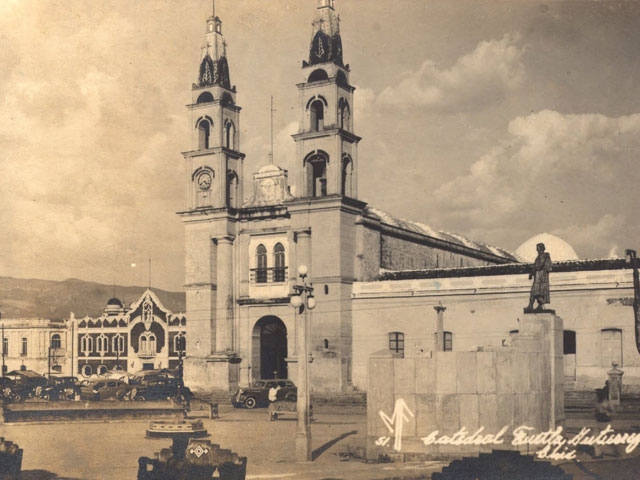
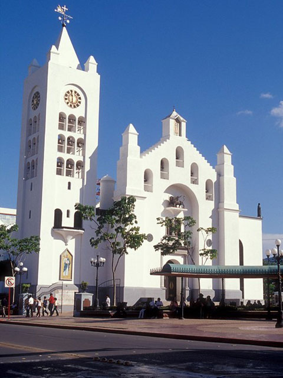
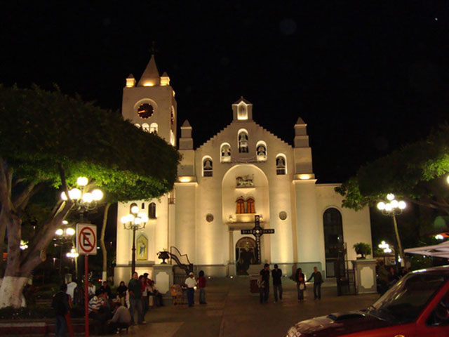
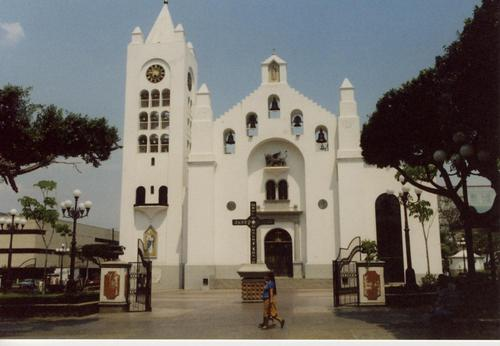
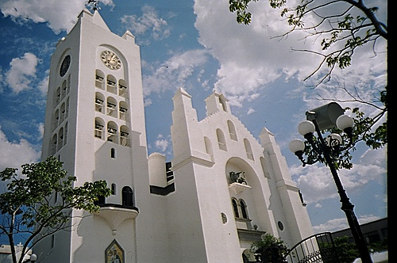

La Catedral de San Marcos es un monasterio ubicado en Tuxtla Gutiérrez, Chiapas, México. Es la sede de la Arquidiócesis de Tuxtla Gutiérrez. El edificio anteriormente era el templo de un convento dominico, y ha sido remodelado en varias ocasiones. Fundada en la segunda mitad del siglo XVI, es un reflejo de la arquitectura colonial chiapaneca ícono de la ciudad, Tuxtla hizo patente su ingreso a la modernidad en los años ochenta y fue remodelada por instrucciones de don Juan Sabines Gutiérrez en 1982, entonces Gobernador del Estado.
Su atractivo principal es su gran torre que alberga un carillón de 48 campanas, las cuales, cada hora tocan una melodía acompañada del desfile de los 12 apóstoles sobre una peana.
Con la construcción del templo se comenzó instruir a los indios zoques en la doctrina cristiana y a establecer la obligación de registrar los bautizos, matrimonios y difuntos, así como la entrega de limosnas para el sostenimiento del templo y del sacerdote. La fachada de la Catedral de San Marcos cuenta de manera “permanente” con un show multimedia, que busca resaltar en un juego de luces la Cultura, Música y Tradiciones de nuestro estado de Chiapas.
Avenida Central SN, Centro, 29000 Tuxtla Gutiérrez, Chiapas, México
Ubicada en el corazón de la cuidad, y para llegar solo hay que cruzar la avenida central ya que este monumento se frente al parque central.
Las Actividades que se realizan todas son del ámbito religioso católico, como lo es el culto a San Marcos, además se puede disfrutar de la melodía de las campanas a cada hora del día y el desfile de los 12 apóstoles. El principal feriado en honor al patronato se realiza del 17 al 25 de abril.





posicione el mouse sobre las imágenes